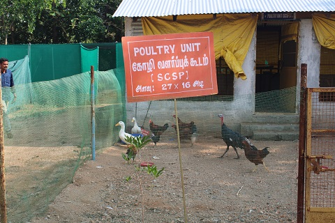
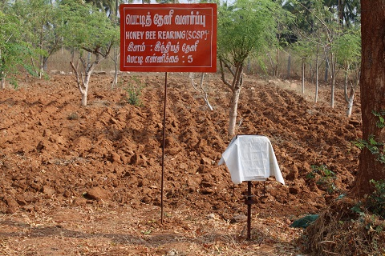
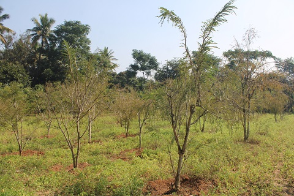

Vermicompost is the End product of Earthworm Waste. It used as a Organic Manure for Crops

Poultry Unit
The farm of animal husbandry which raises domesticated birds such as chickens, ducks, turkeys and geese to produce meat or eggs for food
Slatted Floor Goat Rearing
The raising and breeding of domestic goats (Capra aegagrus hircus) as a branch of Animal Husbandry
Azolla Production Unit
Azolla is an alternative feeds for chicken, ducks, fish, cattle, cow, goats, pigs, guppy, tilapia and other animals
Nutri Garden
Kitchen garden or home garden or nutrition garden is primarily intended for continuous supply of fresh vegetables for family use and minimizing the Budget Expenses

Honey Bee Rearing
Beekeeping (or apiculture) is the maintenance of bee colonies, commonly in man-made hives, by humans
Fodder Production Unit
In a fodder system, a grain like barley, wheat or oats is sprouted in plastic trays and allowed to grow for seven days and then fed to livestock
Shade Net Nursery Unit
A nursery is a place where plants are propagated and grown to a desired size for Planting
Medicinal Park
A plant that has similar properties as conventional pharmaceutical drugs. Humans have used them throughout history to either cure or lessen symptoms from an illnes
Ultra High Density Planting: Mango
The mango trees will be planted closer together with lesser space left than in the high density and normal method of cultivation

High Density Planting: Amla
The Amla trees will be planted closer together with lesser space left than in the high density and normal method of cultivation
HDP: Custard Apple
The Custard trees will be planted closer together with lesser space left than in the high density and normal method of cultivation
Future Fruit Crop
A wide range of woody perennial species cultivated in orchards where soils vary greatly in their biological, chemical, and physical properties
Mother Plant in Citrus
Oranges, grapefruit, lemons and limes are all hybrids, mixed and matched from 10 “wild” citrus species descended from a single Asian ancestor
Banana Macro Propagation Unit
Generating suckers from clean planting material by removing the apical dominance
Food Processing Unit
All the methods and techniques involved in converting a raw material or a combination of raw materials into a consumable product
Sheep Rearing Unit
Sheep with its multi-facet utility for wool, meat, milk, skins and manure, form an important
component of rural economy particularly in the arid, semi-arid and mountainous areas of the country.
Agroforestry Germination Bed
As natural vegetation is cut for agrl. and other types of development,
the benefits that trees provide are best sustained by integrating trees into agrl. system
Bio-input production unit
Natural manures and fertilizers, biocontrol agents and organically grown seeds and plants, which augment the availability of nutrients and disease and pest control to the plants
Cattle Unit
Good health, comfort and protection from inclement weather and which would enable the animals to utilize their genetic ability and feed for optimal production
Root Stock Nursery Unit
The rootstock is the root system of a tree with a part of the stem. Onto this, the flowering or fruiting part of another tree (called the scion) is grafted. This is then grown as a whole new tree
VAM Unit
Improve the nutrient status of the plants, increase growth and development, protects plant against pathogen and confer resistance to drought and salinity


{kind=link}
{kind=link}
{kind=link}
{kind=link}
{kind=link}
{kind=link}
{kind=link}
{kind=link}
{kind=link}
{kind=link}
{kind=link}
{kind=link}
{kind=link}
{kind=link}
{kind=link}
{kind=link}
{kind=link}
{kind=link}
{kind=link}
{kind=link}